Complete Role Based Guide
EduMatch System User Manual
Operational instructions for Administrators, Secretary, head teachers, teachers, and students
Version 1.0 • Prepared for first-time users, school personnel, and academic project evaluation
Table of Contents
Use this manual in sequence for initial orientation, or go directly to the chapter for your assigned role.
- 1About This Manual
- 2EduMatch System Overview
- 3System Requirements
- 4Sign In and Navigation
- 5Administrator
- 6Secretary
- 7Head Teacher
- 8Teacher
- 9Student
- 10Security and Logout
- 11Troubleshooting
- 12Frequently Asked Questions
- 13Glossary
- 14Screenshot Capture Register
How to read the screenshots
Red numbered markers identify controls discussed in the caption. Screens were captured from the actual Vue interface with documentation-only sample names and records. The examples are not live school data. Your screen will show the records authorized for your account.
Accuracy note. Menu items and actions in this manual were verified against the frontend routes, protected backend endpoints, Supabase migrations, and role middleware. Features without a dedicated page are documented only where they actually occur.
1 About This Manual
EduMatch is a role-restricted school learning and records platform. This manual explains the actions that each authorized user can perform and the workflows that connect account administration, school records, classroom content, assessments, attendance, and student recommendations.
Objectives
- Help first-time users sign in and navigate without assistance.
- Define the correct responsibilities and limits of all five roles.
- Provide repeatable steps for common operational tasks.
- Explain warnings, approvals, and record-protection rules.
- Give evaluators a source-aligned reference to the implemented system.
Scope and terminology
The manual uses the labels displayed in the application. A class is a teacher-managed subject offering. A section is an administrative student grouping with a school year and capacity. A lesson is teacher-published PDF content. An assessment may be an activity, challenge, quiz, or exam depending on its configured type.
Role order
| Role | Primary responsibility | Access boundary |
|---|---|---|
| Administrator | Platform governance, accounts, settings, audit and approvals | System-wide administrative data |
| Secretary | Faculty directory, student records, sections, year-end archiving | School operational records |
| Head Teacher | Department staff, registry, content and academic oversight | Assigned department and managed teachers |
| Teacher | Classes, content, assessments, attendance and student results | Assigned subject, advisory section and handled classes |
| Student | Learning, submissions, results and recommendations | Own account and approved classes |
2 EduMatch System Overview
EduMatch brings role-based account management, classroom operations, academic evidence, and recommendation reporting into one web application.
Implemented functional areas
Identity and security
Username/password sign-in, math CAPTCHA, optional login verification controls, password recovery, forced password change, sessions, role guards, rate limits, login attempts, and audit records.
School structure
Grade 10 sections, school year, capacity, active/archive state, strand, departments, subject assignments, advisory assignments, and class codes.
Learning operations
PDF lessons, lesson attachments, class announcements, assessments, manual or AI-assisted question generation, draft/turn-in workflows, review, and scoring.
Evidence and reporting
Attendance, results, grading-period records, learning completion, role analytics, archived records, exports with approval, and strand-fit recommendations.
Data and permission model
Backend routes apply authentication first and then enforce a single permitted role. The database separates users, sections, subjects, enrollments, lessons, assessments, submissions, attendance, recommendations, notifications, sessions, settings, export approvals, announcements, invitations, registry records, and audit logs.
No invented modules. EduMatch does not implement separate administrator pages named School Year Management, Department Management, or Strand Management. School year is stored and controlled through sections and year-end archiving. Department and strand data are assigned in user, teacher, registry, section, and recommendation workflows.
3 System Requirements
Supported access
| Requirement | Guidance |
|---|---|
| Device | Desktop or laptop is recommended for administration, content creation, assessment review, and reports. Responsive layouts also support smaller screens. |
| Browser | Use a current version of Microsoft Edge, Google Chrome, Firefox, or Safari with JavaScript and local storage enabled. |
| Connection | A stable internet connection is required for sign-in, data synchronization, uploads, submissions, and exports. |
| Documents | A PDF viewer is useful for lesson review. Teachers upload lesson plans as PDF through the implemented lesson workflow. |
| Account | A valid role-specific account, invitation link, or registration link supplied by authorized school personnel. |
| Access to the registered email address may be required for invitation activation, password reset, and login verification when enabled. |
Before first use
- Confirm that your name, username, email address, role, department, subject, section, and strand assignment are correct with school personnel.
- Open the official EduMatch URL supplied by the school. Do not use links from unknown senders.
- If you received an invitation or registration link, complete it before attempting ordinary sign-in.
- Use a unique password and complete any forced password-change screen shown after activation.
- Allow pop-ups or downloads only when you intentionally request a report or file.
File safety. Upload only school-authorized files. Check filenames and content before submission; do not upload credentials or unrelated personal data.
4 Sign In and Navigation
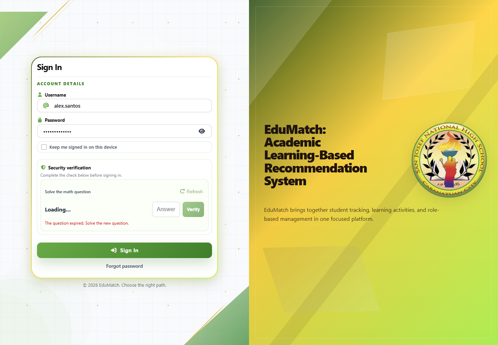
1234Sign in
- Enter the username assigned to your account.
- Enter your password. Use the eye control only when no one else can see your screen.
- Select Keep me signed in on this device only on a private, trusted device.
- Solve the displayed math security question and select Verify. Refresh the question if it cannot be read or loaded.
- Select Sign In. Complete email verification or a required password change if the system presents either step.
Recover access
- Select Forgot password.
- Provide the registered account information requested by the form.
- Open the school-approved reset message and follow the time-limited link.
- Create a new unique password, then return to sign in.
Common navigation
- The left sidebar opens role pages. On small screens, select the menu button.
- The bell opens notifications where implemented.
- The question-mark control starts the guided tour on student and teacher pages.
- The gear opens Profile, Settings, and Logout.
- Search and filter controls change only the visible list unless a Save, Apply, or Export action is selected.
4.1 Password Recovery Reset and Required Change
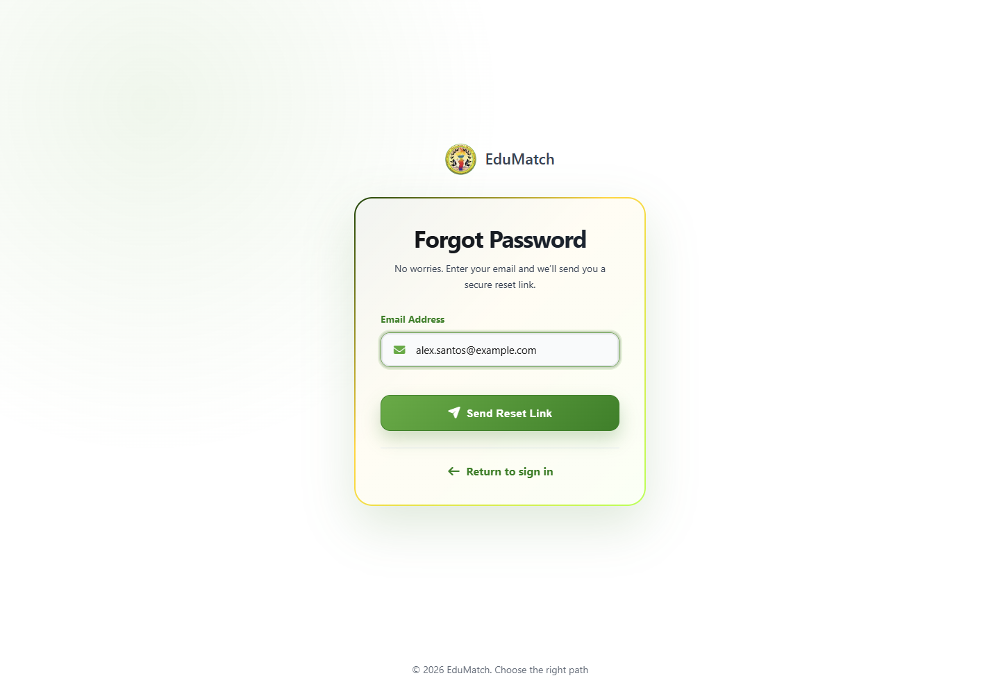
123Request a reset
- Open Forgot password from Sign In.
- Enter the email address stored on the EduMatch account.
- Submit once and wait for the neutral response. The system avoids revealing whether an address belongs to an account.
- Open the most recent reset email from the approved sender.
- Use the reset link before it expires.
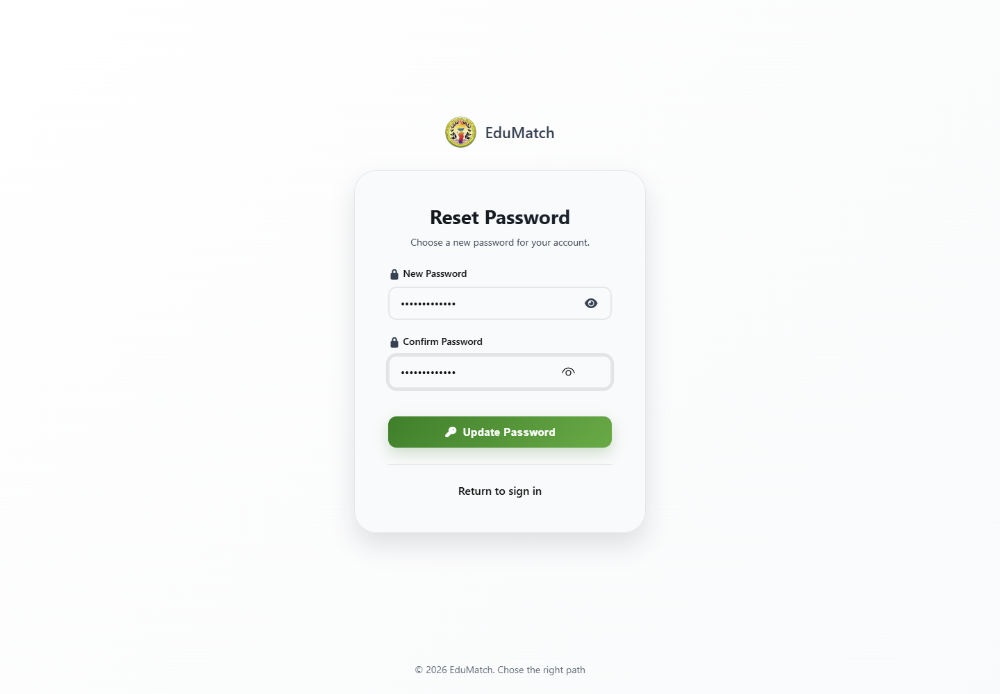
123Set the new password
- Confirm that the reset page accepts the token. If it reports invalid or expired, request another link.
- Enter a new password containing 8 to 16 characters with the required uppercase, lowercase, number, and other displayed checks.
- Enter the same password again.
- Submit, wait for confirmation, and sign in with the new password.
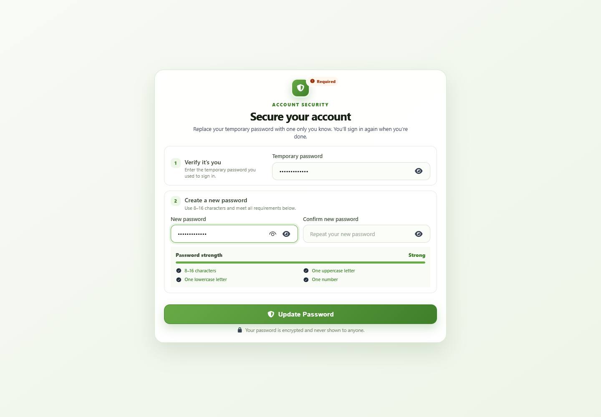
1234Required first-login change
Accounts created with temporary credentials can set forcePasswordChange. EduMatch redirects every protected route to this page until the user verifies the temporary password and successfully creates a permanent one.
Security. A password reset or change invalidates assumptions about older credentials. Review active sessions afterward and revoke devices you do not recognize.
4.2 Invitations Registration Links and Account Activation
EduMatch has several controlled onboarding paths. The link determines the allowed role, assignment context, and registration form; users cannot promote themselves by changing a URL or form value.
| Link | Issued by | Purpose |
|---|---|---|
| Teacher invitation or private link | Administrator or Head Teacher | Create an assigned teacher account; teacher invitation reuses the Login activation interface. |
| Student registry link | Head Teacher or authorized registry workflow | Verify the registered student, email code, username, and password. |
| Class registration link | Teacher | Verify a named student and create an account already linked to the intended class workflow. |
| Administrative private registration link | Administrator or authorized Secretary workflow | Activate a permitted staff role using the signed link context. |
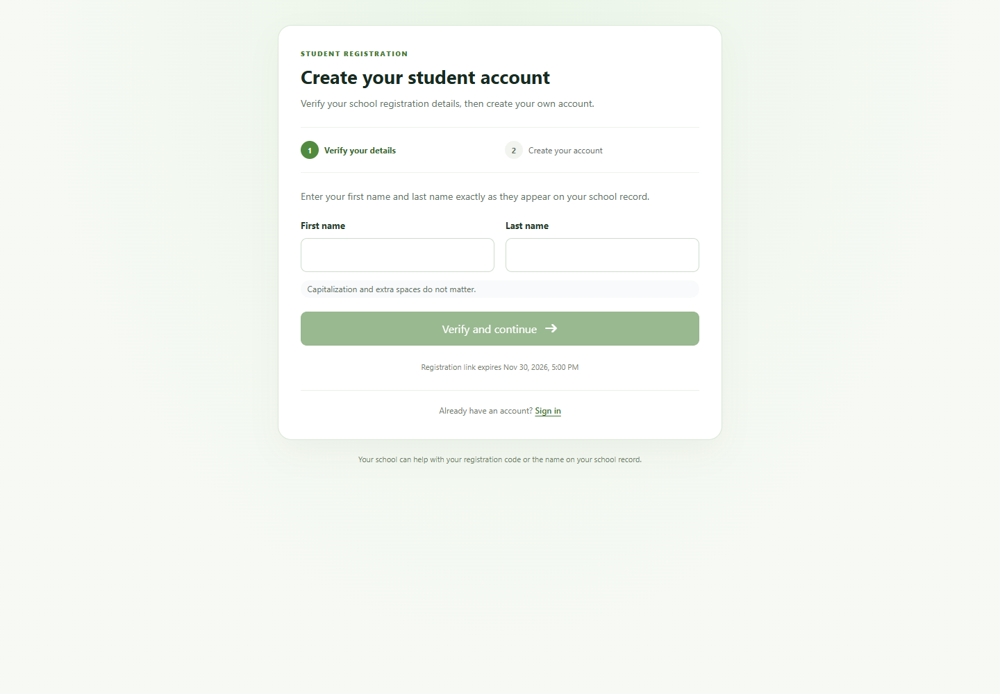
123Student registry activation
- Open the exact private link supplied by school personnel.
- Enter the registered first and last name to verify the intended student record.
- Enter the student email and request the six-digit verification code.
- Enter the code before it expires and select Verify email.
- Choose an available username of 3 to 30 characters, beginning with a letter or number and using only letters, numbers, periods, underscores, or hyphens.
- Create and confirm an 8-to-16-character password that meets all displayed requirements.
- Create the student account and sign in.
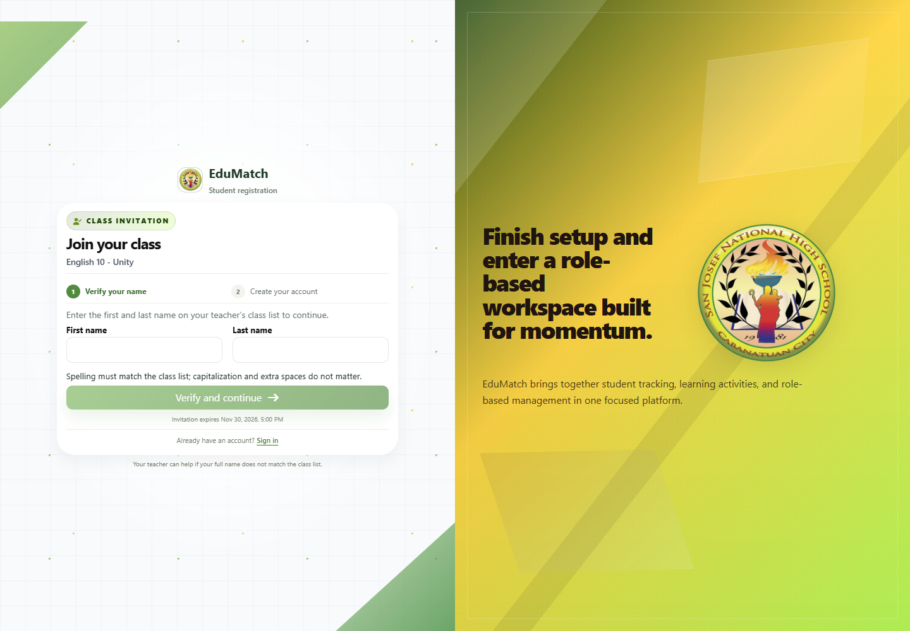
123Class-link activation
- Open the teacher-provided class registration link.
- Verify first and last name against the invitation.
- Confirm the displayed class/teacher context before continuing.
- Enter a Gmail address where the form requires Gmail, choose an available username, and create the password.
- Submit once and continue to the assigned student workspace.
Link handling. A private link is a credential. Do not forward it, publish it, edit its token, or reuse it for another person. Ask the issuer for a replacement when it is expired, revoked, already used, or assigned incorrectly.
4.3 Notifications Tours Search Filters and Responsive Navigation
Notifications
- Select the bell in the header.
- Read the newest items first. Student notification panels can mark all as read; teacher panels can clear displayed notifications according to their implementation.
- Select a notification action only after confirming its class, assessment, enrollment, or announcement context.
- Close the panel with its close control or by selecting outside it.
Guided tours
Teacher and student layouts implement role-specific tours. The question-mark button starts or restarts the tour. Use Next, Back, Skip, and Finish. The preference is stored so the application can avoid showing the tour repeatedly; it can be restarted later.
Search filter sort and pagination behavior
- Search generally matches the text named in its placeholder; it does not modify a record.
- Multiple filters combine. Clear filters before concluding that a record is missing.
- Pagination changes the visible page, not the number of matching backend records.
- Refresh re-requests authorized data and can discard unsaved filter-dependent state.
- Export uses the active scope described beside the export action.
Mobile and narrow screens
- Select the menu button to open the sidebar.
- Choose a route; the drawer closes after navigation.
- Use horizontal table scrolling when a responsive card alternative is not displayed.
- Close overlays with their close button or the shaded backdrop.
Unsaved work. Before switching routes, closing a modal, refreshing, or signing out, save drafts and completed forms. EduMatch cannot preserve every partially entered form.
5 Administrator
Administrators govern EduMatch across all roles. They monitor platform activity, maintain accounts and sections, review controlled requests, publish school announcements, inspect audit history, and configure security and system preferences.
Administrator navigation
| Menu | Purpose |
|---|---|
| Overview | System counts, publishing activity, role growth, and platform metrics. |
| User Management | Create links and accounts, search users, inspect profiles and progress, edit, message, invite, export, or remove. |
| Manage Sections | Create, edit, archive, restore, and delete unreferenced sections. |
| Request | Review archived-record PDF export requests and their status. |
| Announcements | Publish school-wide messages to selected role audiences. |
| Audit Logs | Filter and inspect recorded administrative and security activity. |
| Gear menu | Profile, settings, active sessions, maintenance, appearance, and logout. |
5.1 Administrator Dashboard and Analytics
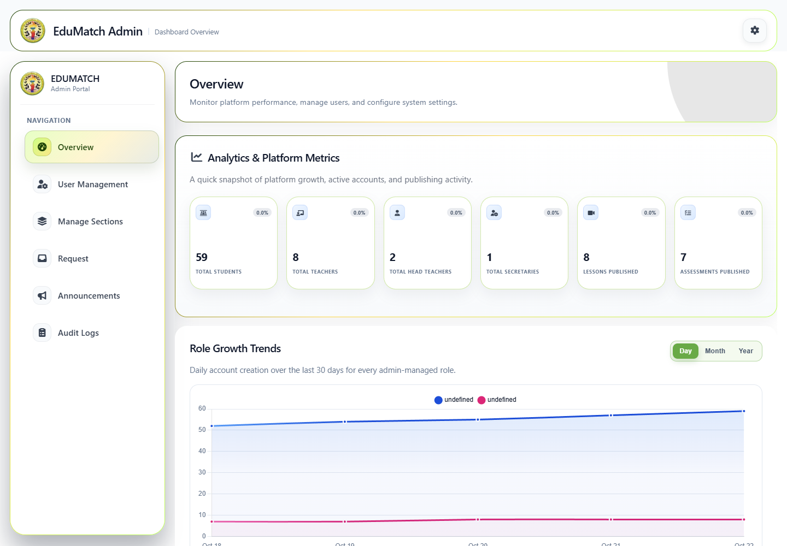
1234Review platform status
- Select Overview.
- Read the metric cards for students, teachers, head teachers, secretaries, lessons, and assessments.
- Use the Day, Month, or Year control on role-growth trends when available.
- Scroll through analytics panels to compare role creation, activity, content publication, and other returned system metrics.
- Treat analytics as monitoring evidence; use User Management or Audit Logs to investigate a specific account or event.
Interpretation. A zero value can mean no matching data, an empty environment, or a failed/unauthorized data request. Refresh and verify filters before drawing conclusions.
5.2 Administrator User and Account Management
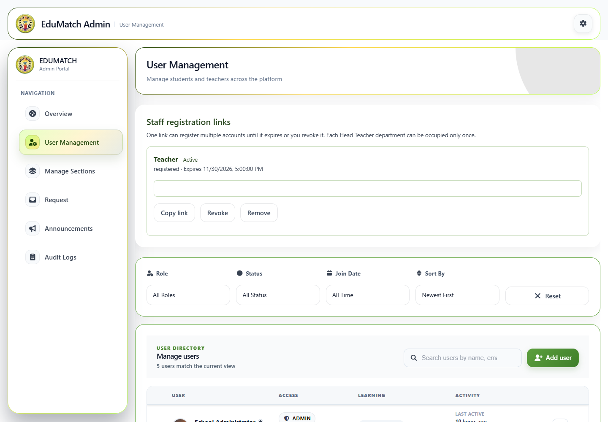
1234Find and inspect a user
- Open User Management.
- Filter by role or status and search by name, email, or username.
- Open a user action menu or profile view.
- Review identity, role, assignment, account status, learning progress, subjects, activity, and timestamps that the page provides.
- Close the profile without saving if no change is needed.
Create or invite an account
- Select the add/create action.
- Choose the supported role. The implementation provides private registration links for secretary, teacher, and head teacher onboarding.
- Enter the required identity and role-assignment information. Teacher and head-teacher details can include department or subject assignments.
- Create the link or account.
- Copy the generated private link and deliver it only to the intended person through an approved channel.
- Revoke or delete an unused registration link from its link list.
Edit, message, invite, or remove
- Open the selected user’s actions.
- Choose Edit to change allowed profile, role, status, or assignment fields.
- Choose Send Message or Send Invite when the corresponding action is available.
- Review the confirmation carefully.
- For deletion, enter the current administrator password when requested and confirm only after checking the exact account.
Warning. Deletion can remove the account and related records according to backend rules. Prefer suspension or deactivation when the purpose is temporary access control.
5.3 Reports Export Approvals and Student Account Requests
Learning progress and user exports
User Management includes report/export operations for visible user and learning progress data. Apply filters first so the export scope matches the intended audience.
- Set role, status, search, or learning filters.
- Review the on-screen rows and totals.
- Select the relevant export action.
- Store the downloaded file in an approved school location and restrict access to authorized staff.
Archived PDF export approval
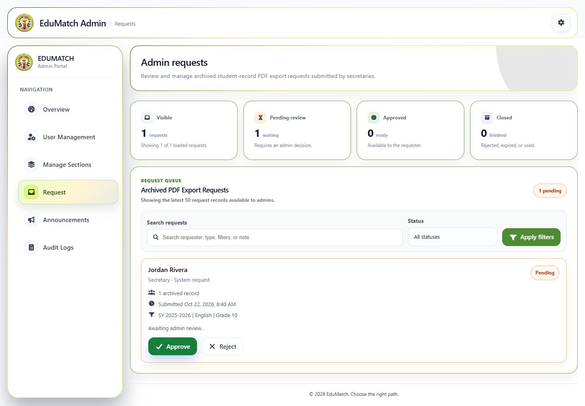
1234- Open Request.
- Filter by status, requester, type, date, filters, or note.
- Open the pending request and verify the requester and requested archived-record scope.
- Approve or reject the request and record a concise review note where provided.
- The secretary must consume an approved request from the Archived page before the authorization expires or is otherwise invalidated.
Student account requests
Student settings can submit account deactivation or deletion requests. Administrator backend controls support listing and reviewing these requests. Process them only after identity, policy, and record-retention requirements are satisfied.
5.4 Section School Year Department and Strand Administration
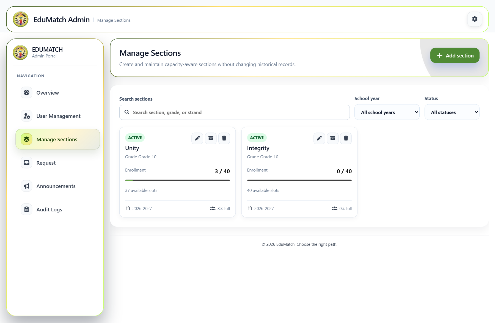
1234Create a section
- Open Manage Sections and select Add section.
- Enter the section name.
- Enter the school year in the required four-digit range format, for example 2026-2027.
- Set student capacity between the allowed minimum and maximum.
- Save, then verify the section card, status, enrollment count, available slots, and school year.
Maintain sections
- Search by section, grade, strand, or school year and filter by year or active/archive status.
- Use Edit to change supported details. Capacity cannot be reduced below constraints enforced by the backend.
- Use Archive to stop active use while preserving historical references; use Restore to reactivate.
- Use Delete only for an unreferenced section. The system rejects deletion when records still depend on it.
Where school year department and strand are managed
- School year: stored on sections and used by the secretary’s end-of-school-year archive workflow.
- Department: assigned through user, teacher, and registry workflows; head teachers supervise their assigned department.
- Strand: appears in section/student assignment and recommendation evidence. The standardized current implementation targets Grade 10 records.
5.5 Announcements Audit Logs and Settings
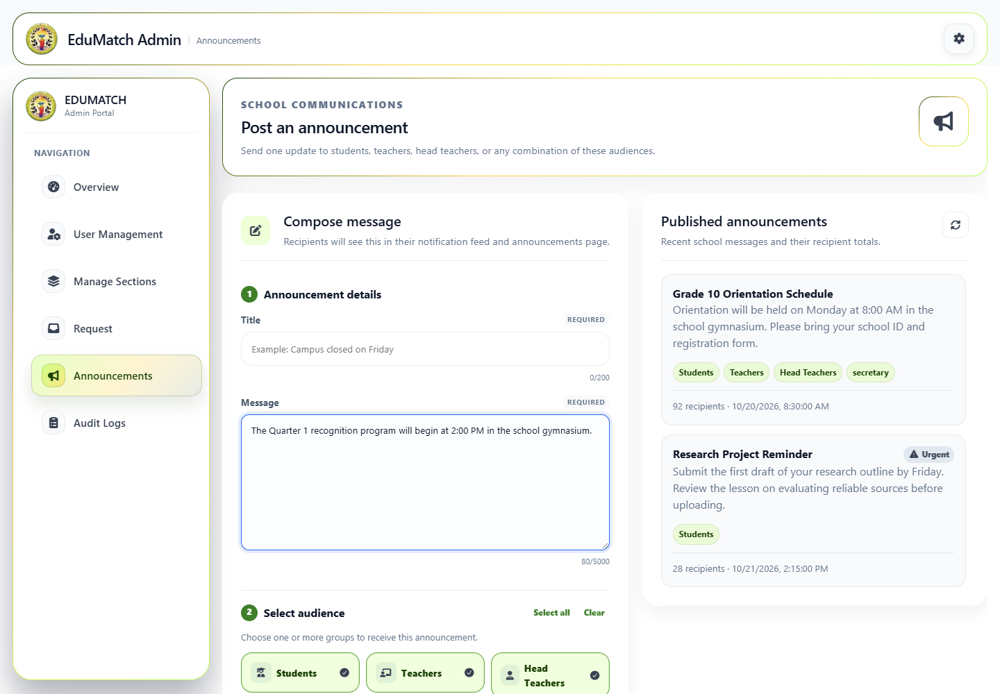
1234Publish a school announcement
- Open Announcements.
- Enter a clear title and complete message, including dates and required action.
- Select one or more audiences: students, teachers, head teachers, or the supported role combination.
- Review the recipient-group count and select Post announcement.
- Confirm the announcement appears in Published announcements.
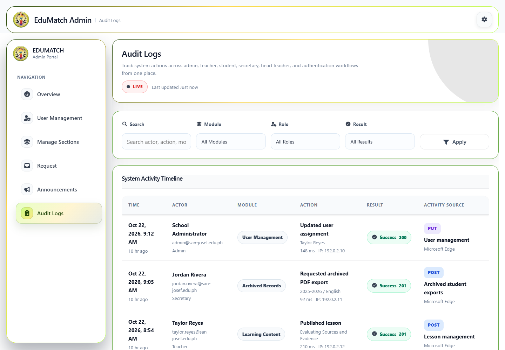
1234Investigate an event
- Open Audit Logs.
- Search by actor, action, module, target, or IP address.
- Apply action, module, result, role, or date filters shown by the page.
- Read the timestamp, actor, target, request information, and outcome.
- Move through pages without changing the original audit record.
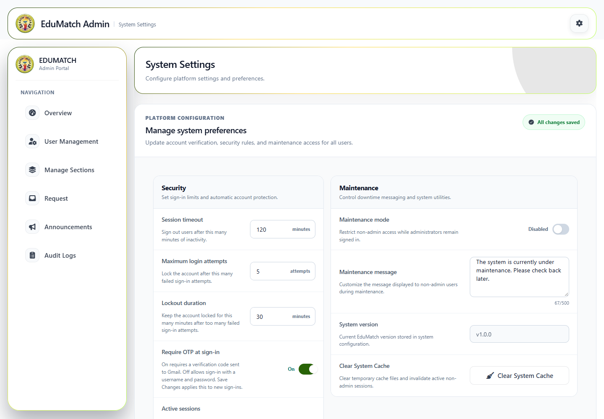
1234Configure settings safely
System Settings groups security, maintenance, appearance, and session controls. Review the current value before changing it, save deliberately, and verify the success message. Cache clearing and maintenance mode can affect other users, so schedule and communicate those actions.
5.6 Administrator Profile Security Sessions and Maintenance
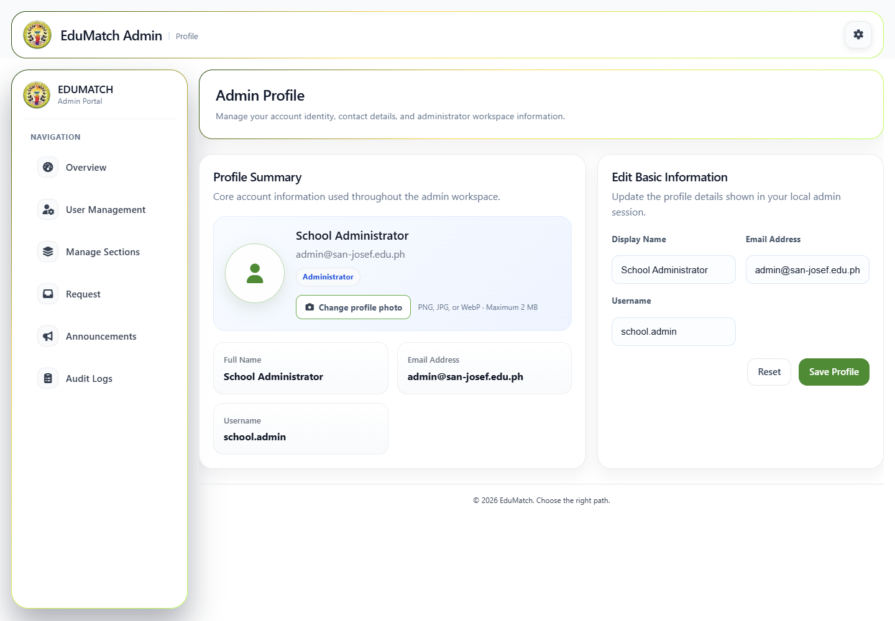
1234Update the administrator profile
- Open the gear menu and choose Profile.
- Review the current summary before editing.
- Choose an accepted image and remain within the administrator photo size limit of 2 MB.
- Edit display name, email, or username only when the change matches the official account identity.
- Select Reset to discard local edits or Save Profile to submit them.
- Sign out and back in if another page continues to show cached identity text.
Security settings
The administrator settings interface controls sign-in limits and automatic account protection according to the saved system security model. Change one policy group at a time, record the previous value, save, and verify the confirmation.
Active sessions
- Open Settings and review the current and other sessions.
- Compare device description, IP address, and last activity.
- Revoke a non-current session that is no longer trusted.
- Do not revoke the current session until unsaved administrative work is complete.
Maintenance and cache
- Maintenance mode: communicate the window before enabling it and supply the intended maintenance message.
- Clear cache: use the confirmation dialog and expect pages to request fresh data afterward.
- Appearance: affects display preferences; it does not change stored school records.
- Reset settings: restores displayed defaults only after the confirmed save/reset operation.
Login Attempts. The legacy /admin/login-attempts route redirects to Audit Logs in the current router. Use Audit Logs and its sign-in/security filters rather than documenting Login Attempts as a separate active page.
6 Secretary
Secretaries maintain operational school records: faculty visibility, authorized account administration, student directory and enrollment records, sections, attendance overview, year-end archiving, and controlled exports.
Secretary navigation
| Menu | Implemented use |
|---|---|
| Dashboard | Directory and attendance overview with dashboard exports. |
| Teacher Monitoring | Search and review teacher activity and assignment information. |
| User Management | Authorized account, invitation, link, message, profile, and assignment operations. |
| Student Records | Search, filter, export, register, assign, and perform year-end archive operations. |
| Manage Sections | Maintain capacity-aware sections. |
| Archived | Review historical student records and request protected PDF exports. |
6.1 Secretary Dashboard and Teacher Monitoring
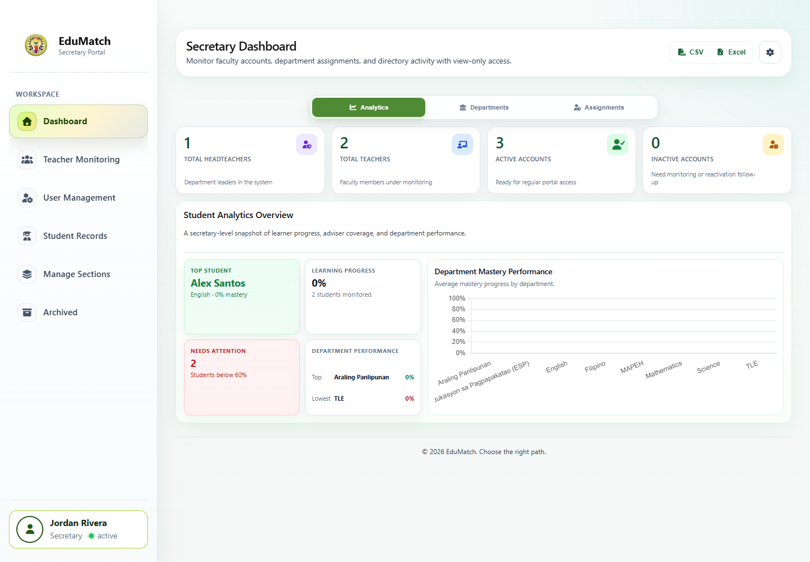
1234Use the dashboard
- Open Dashboard.
- Review faculty/account counts, assignment summaries, attendance indicators, and directory activity returned for the current school data.
- Use dashboard search or page sections to focus the displayed information.
- Select CSV or Excel export only after verifying the scope and destination of the file.
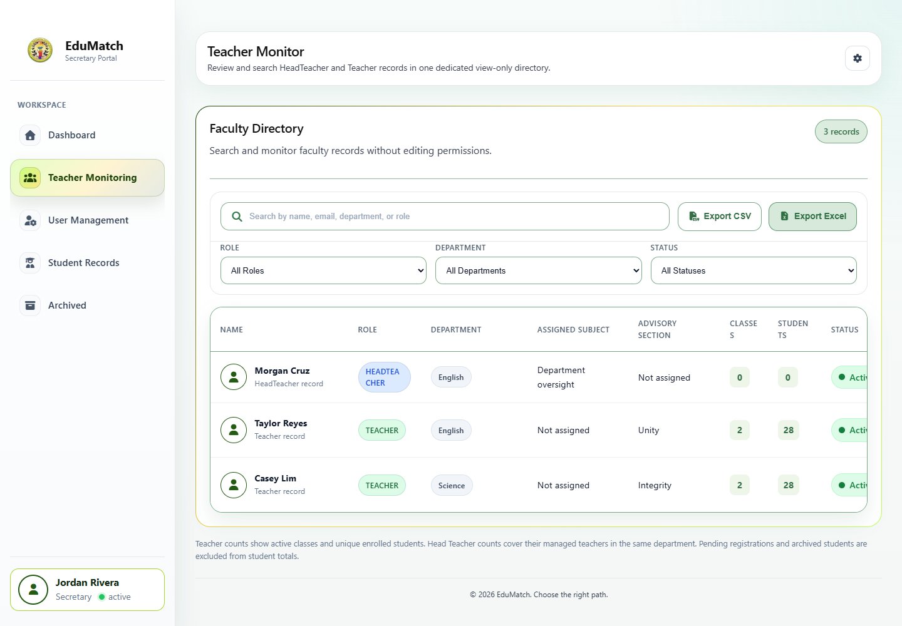
1234Monitor teachers
- Open Teacher Monitoring.
- Search by teacher identity and use department, status, or activity filters displayed by the page.
- Review the teacher’s assignment and available monitoring indicators.
- Use this page for monitoring; perform account changes from User Management when the UI provides the corresponding permission.
Permission boundary. Secretary access is operational. Academic content creation and assessment grading remain teacher or head-teacher responsibilities.
6.2 Secretary User Registration and Account Management
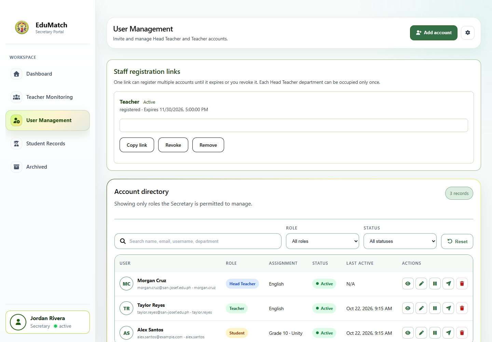
1234Create or register an account
- Open User Management.
- Choose the available Add User or private registration-link action.
- Select the permitted role and enter the required identity and school assignment details.
- For a link workflow, create and copy the private link; send it only to the intended user.
- For a direct account workflow, verify the returned result and invitation status.
Maintain an account
- Search by name, email, or username and narrow results by role/status.
- Open the record and review its profile before acting.
- Use Edit for permitted identity, role, department, subject, section, or status changes.
- Use Send Invite for an account that still needs activation, or Message for a direct administrative notice.
- Use Delete only with authorization and after checking dependent records.
Secretary account policy. Database migrations enforce a single secretary account. If a secretary already exists, creation of another may be rejected even when the form is available to an authorized operator.
6.3 Student Records Enrollment Assignment and Year End
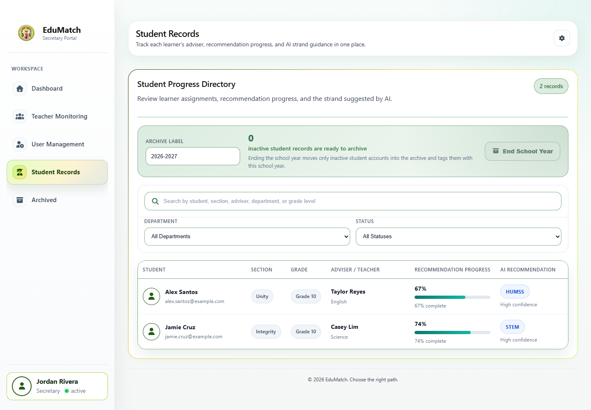
12345Find and review a student
- Open Student Records.
- Search by the supported student identifiers.
- Filter by school year, department, grade, strand, section, or other displayed criteria.
- Open the student record to review enrollment, adviser/teacher assignment, section, recommendation progress, and archive status returned by the backend.
Register and assign students
- Start the student registration or import action available on the page.
- Enter or upload only the required student registry data.
- Choose the correct department, teacher/adviser, section, and related assignment fields shown by the workflow.
- Validate rows and resolve any rejected or incomplete assignment before submission.
- Complete registration and verify the student in Student Records.
End a school year
- Apply the exact school-year filter and review the affected students.
- Start End School Year only after school approval and record checks are complete.
- Read the confirmation, including the archive scope.
- Confirm the operation and wait for completion.
- Open Archived and verify the transferred historical records.
Warning. Year-end archiving is a high-impact record operation. Do not use it merely to hide inactive students. Correct individual assignments first and keep the school-year label consistent with section records.
6.4 Secretary Sections Archived Records and Export Approval
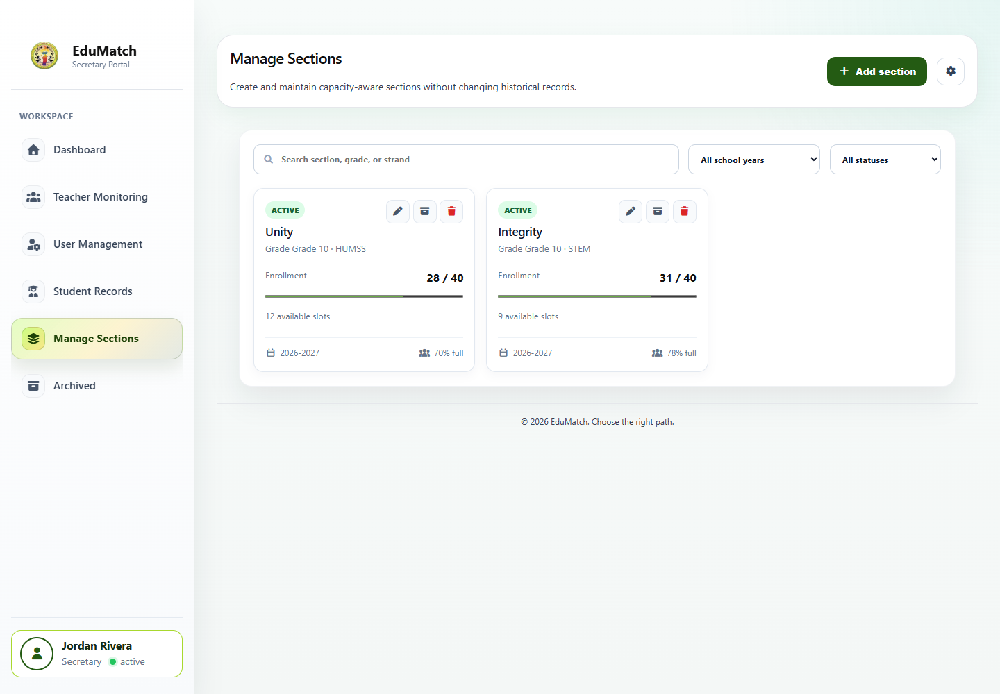
1234Secretary section creation, editing, archive/restore, capacity review, and deletion rules are the same as the administrator workflow in section 5.4.
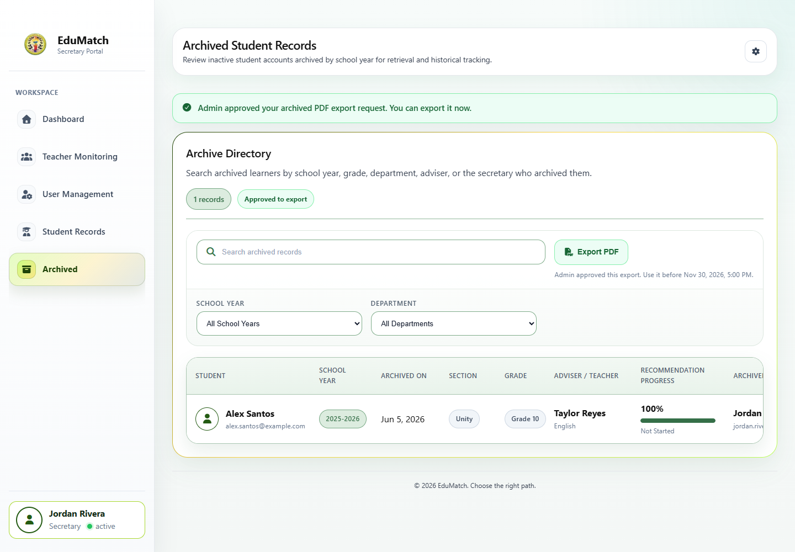
12345Review and export archived records
- Open Archived.
- Filter by school year, department, grade, and search terms.
- Review the exact visible scope. CSV/Excel actions may download directly according to the implementation.
- For PDF, create an export-approval request with the current filters.
- Wait for administrator approval; refresh the request status.
- After approval, select the PDF export action. The system consumes the approval for the approved scope.
Protected export. Changing filters after approval can invalidate the intended scope. If the selected archive view changes, request approval again.
6.5 Secretary Profile Password and Appearance
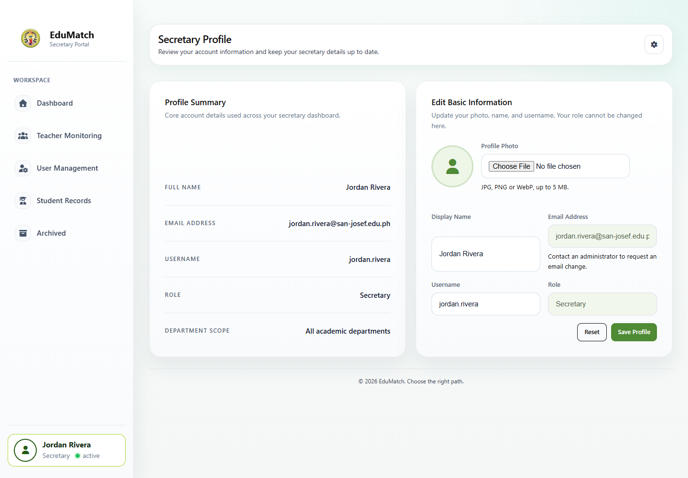
1234Update the profile
- Open the gear menu and choose Profile.
- Choose a JPG, PNG, or WebP image no larger than 5 MB when updating the photo.
- Edit the display name and username within the displayed rules.
- Confirm the role remains read-only as Secretary.
- Reset unwanted changes or select Save Profile.
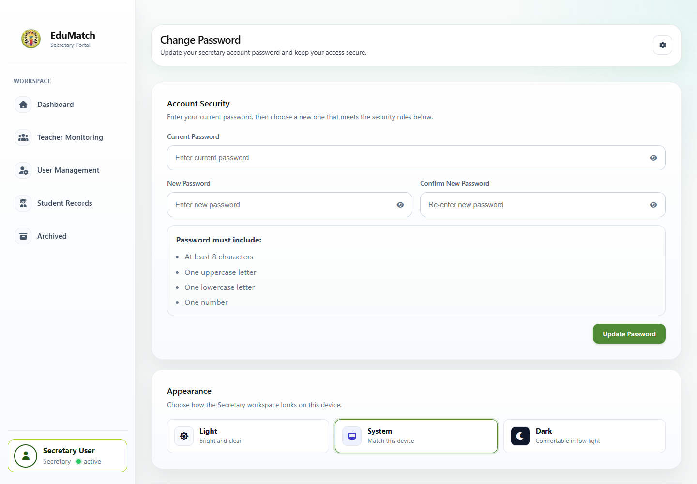
1234Change password
- Open Settings.
- Enter the current password.
- Create a new password meeting every displayed check and enter it again.
- Submit once and wait for confirmation.
- Sign in again if the active session is ended by the security operation.
Appearance
Select the available light, dark, or system-following appearance option shown by the page and save/apply it. Appearance changes do not alter exports or other users’ themes.
7 Head Teacher
Head teachers supervise an assigned department. Their implementation covers teacher invitations and accounts, department teacher assignments, student registry operations, attendance visibility, teacher lessons and assessments, AI-assisted assessment creation, and announcements sent through managed teachers.
Head Teacher navigation
| Menu | Purpose |
|---|---|
| Dashboard | Department, teacher, student, content, attendance, and activity summaries. |
| Management | Managed teachers, invitations, assignments, student/content drill-down, assessments, and announcements. |
| Student Registry | Register/import students and maintain assignment workflows. |
| Lessons | Review or create teacher-linked lesson content within permitted scope. |
| Announcements | View applicable school announcements when available in navigation. |
| Profile and Settings | Maintain own profile, appearance/preferences, sessions, and password controls. |
7.1 Head Teacher Dashboard and Monitoring
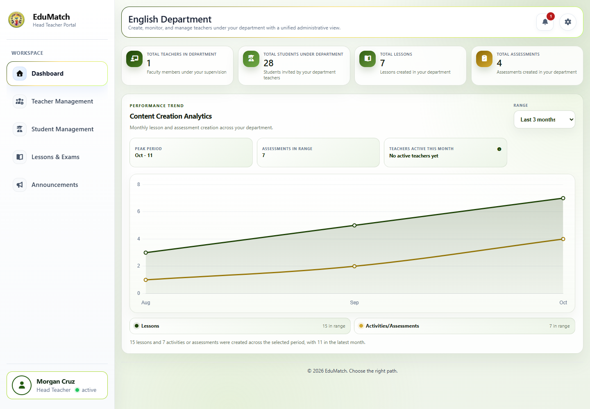
1234Review department status
- Open Dashboard.
- Review the returned counts for managed teachers, students, lessons, assessments, and attendance indicators.
- Use the displayed filters or tabs to focus on a section, teacher, class, or reporting period when available.
- Open Management for teacher-specific action, Student Registry for assignment corrections, or Lessons for content review.
Attendance overview
The protected head-teacher attendance endpoint returns an oversight view rather than teacher attendance entry. Use it to identify missing or unusual records, then coordinate with the responsible teacher; the teacher owns roster entry and locking.
7.2 Teacher Management Invitations and Academic Supervision
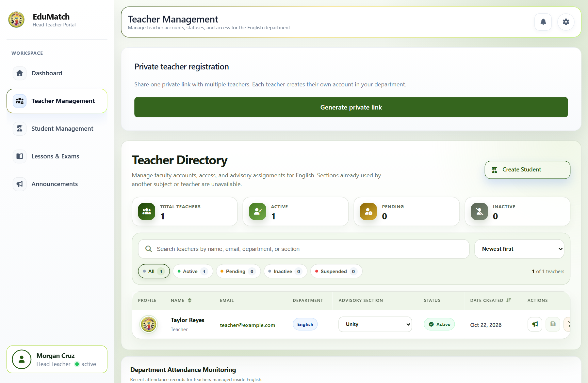
1234Invite or create a teacher
- Open Management and choose the teacher invitation/registration action.
- Enter the teacher’s identity and ensure the department/subject aligns with the head teacher’s scope.
- Create or send the invitation.
- Copy a private link only when required, and deliver it securely.
- Use the invitation list to resend, revoke, or remove links according to the displayed status.
Maintain a managed teacher
- Search for the teacher and open the management record.
- Review department, subject, section/advisory assignment, status, and related counts.
- Edit only supported assignment or profile fields.
- Open the teacher’s students, lessons, or assessments for supervisory review.
- Use the announcement action to communicate through the selected managed teacher when required.
Content and assessment supervision
The backend permits head teachers to list managed lessons and assessments, create a lesson tied to a managed teacher, create or update an assessment, and use AI generation when the AI service is enabled. Confirm teacher, class, subject, dates, scoring, and question content before publishing.
7.3 Student Registry
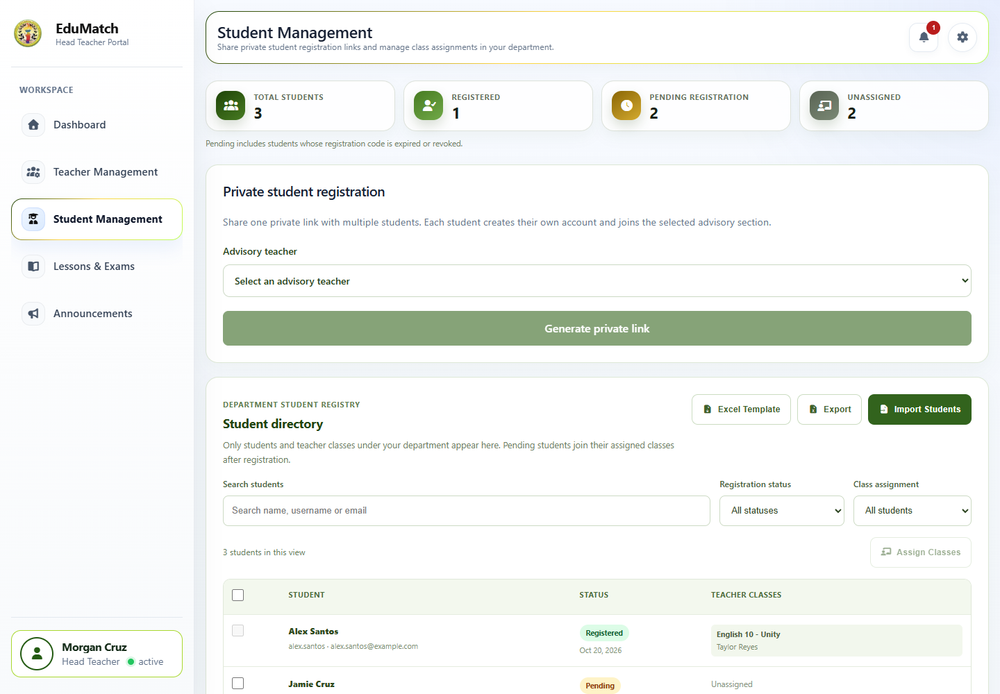
1234Register one student
- Open Student Registry and choose the individual registration or private-link action.
- Enter the required student identity and school details.
- Assign the correct teacher/adviser and section when the form requires assignment.
- Create the registration and provide the activation link through an approved channel.
- Verify activation and assignment in the registry list.
Import or register multiple students
- Open the bulk/import workflow if displayed.
- Use the provided schema or template exactly; do not rename required columns.
- Assign teacher/department/section information required by the current registry flow.
- Validate the preview and correct duplicate, invalid, or unassigned rows.
- Submit and retain the result summary for follow-up.
Assignment rule. The implemented registry migrations require teacher assignment for student import and support department-assignment workflows. An incomplete assignment can be rejected rather than silently accepted.
7.4 Lessons Assessments and Learning Materials
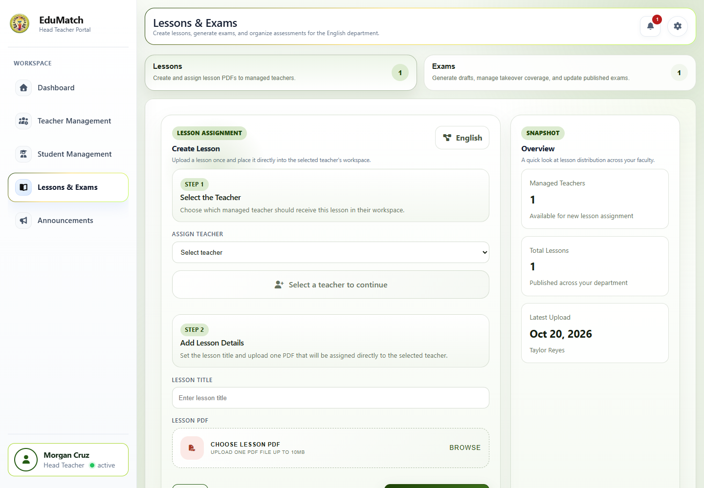
1234Review learning materials
- Open Lessons.
- Filter by teacher, class, subject, or status using the controls provided.
- Open the lesson record and verify title, teacher, assignment, publication details, and PDF availability.
- Coordinate corrections with the teacher or use the permitted management create/update action where the page exposes it.
Create a managed assessment
- Open the assessment area from Management.
- Choose the managed teacher and correct class/subject.
- Set the title, type, dates, instructions, scoring, and lesson link supported by the form.
- Create questions manually, or request AI generation if the status indicates that AI is enabled.
- Review every AI-produced question, option, answer, and point value. Edit or discard unsuitable output.
- Save/update the assessment and verify its status and teacher assignment.
AI warning. AI generation is an authoring aid, not an approval. The head teacher or teacher remains responsible for curriculum fit, correctness, fairness, privacy, and final publication.
7.5 Head Teacher Announcements Profile and Settings
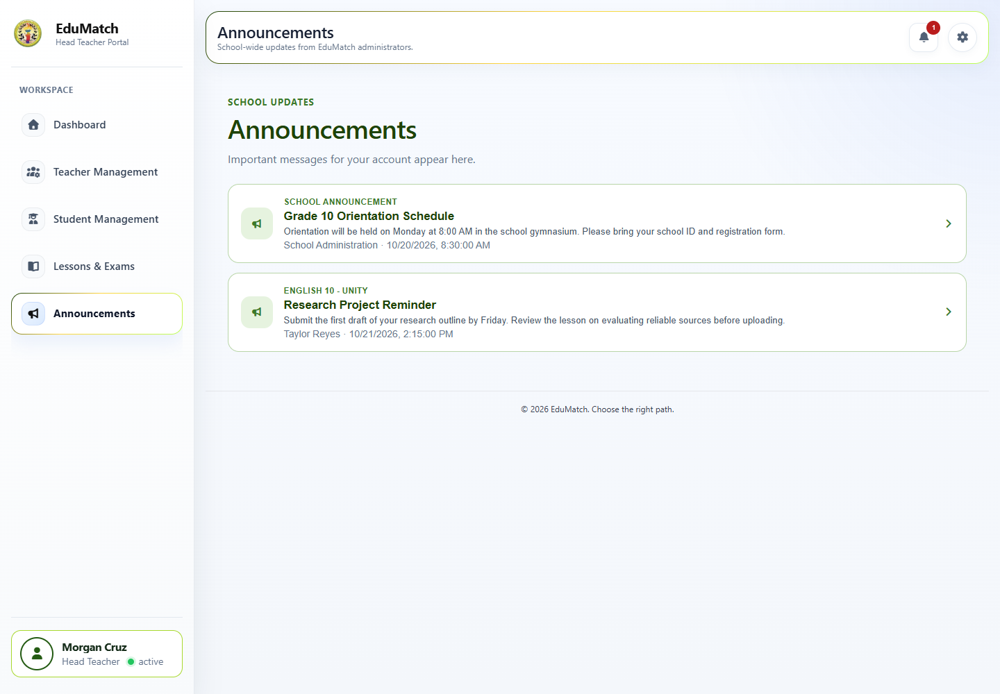
1234This page displays school announcements sent to the head-teacher audience. Refresh after a new administrator announcement and open the selected message to read its complete content.
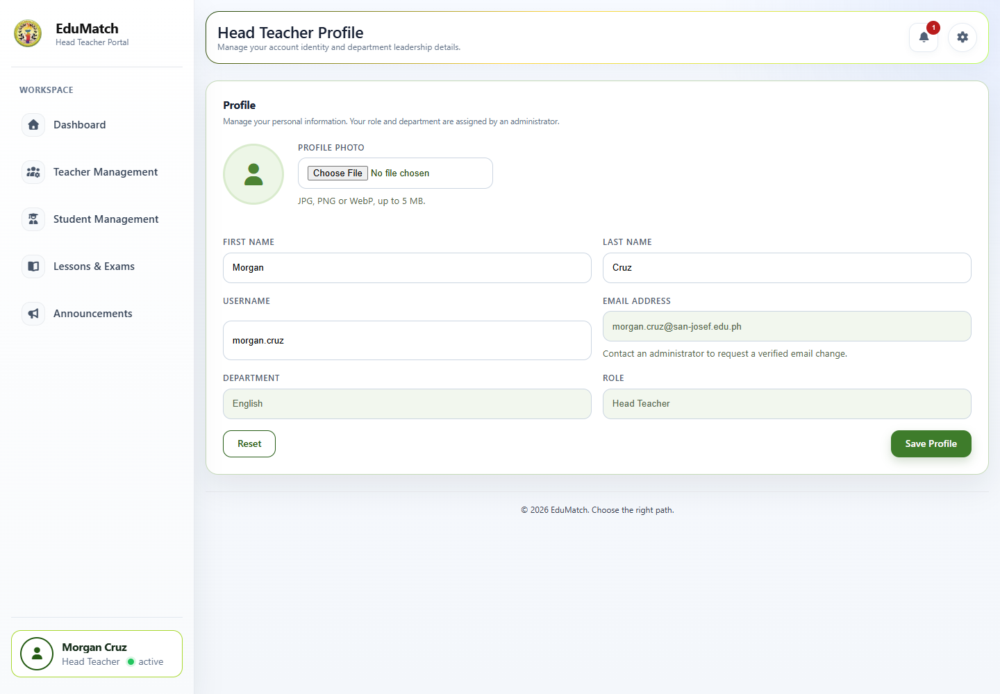
1234Maintain leadership identity
- Open Profile from the account menu.
- Review the name, account identity, department, and leadership details returned for the account.
- Edit only fields enabled by the form; department assignment can be controlled by higher-level account administration.
- Choose an accepted profile image when the control is available.
- Save and verify the updated header/profile summary.
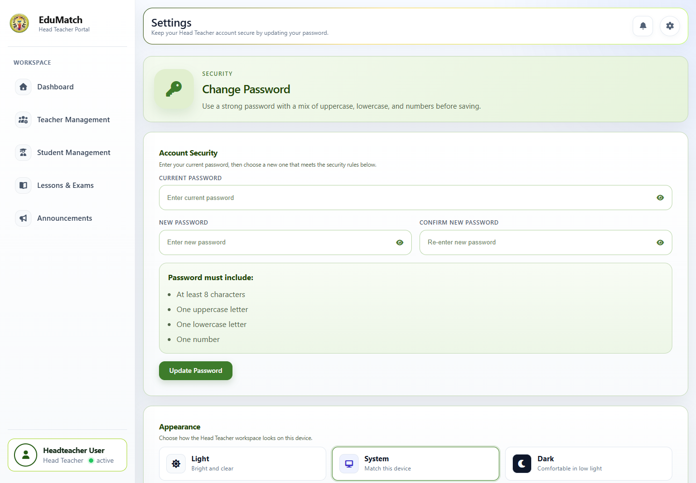
1234Security and appearance
Enter the current password, create and confirm a new password meeting the displayed rules, and submit. Use Appearance to select the available role theme option. Use the account menu to log out after finishing.
8 Teacher
Teachers manage their classes and students, publish PDF lessons, create assessments manually or with AI assistance, review submissions and results, record attendance, configure grading weights, and communicate with their classes.
Teacher navigation
| Menu | Purpose |
|---|---|
| Dashboard | Welcome view, calendar, notifications, class/content summaries, and guided tour. |
| Activities | Lesson Upload and Assessment Creation subpages. |
| Students | Classes, registration links, enrollment requests, rosters, and announcements. |
| Records | Lessons, assessments/results, grading records, reviews, and attendance. |
| Announcements | View school/class announcements. |
| Profile and Settings | Own profile image/details, preferences, security, sessions, and password. |
8.1 Teacher Dashboard
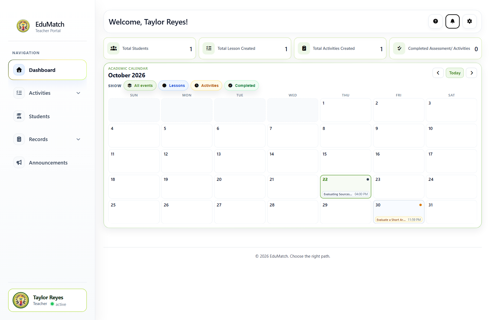
1234Start the workday
- Open Dashboard.
- Review notifications for enrollment requests, student activity, announcements, and system messages.
- Check the calendar and content/class summaries displayed for the account.
- Use Activities to publish content, Students to manage rosters, or Records to review results and attendance.
- Select the question-mark control to restart the guided tour when available.
Scope. The dashboard is personalized to the authenticated teacher’s subject, advisory section, handled classes, and approved enrollments.
8.2 Create and Manage Classes and Students
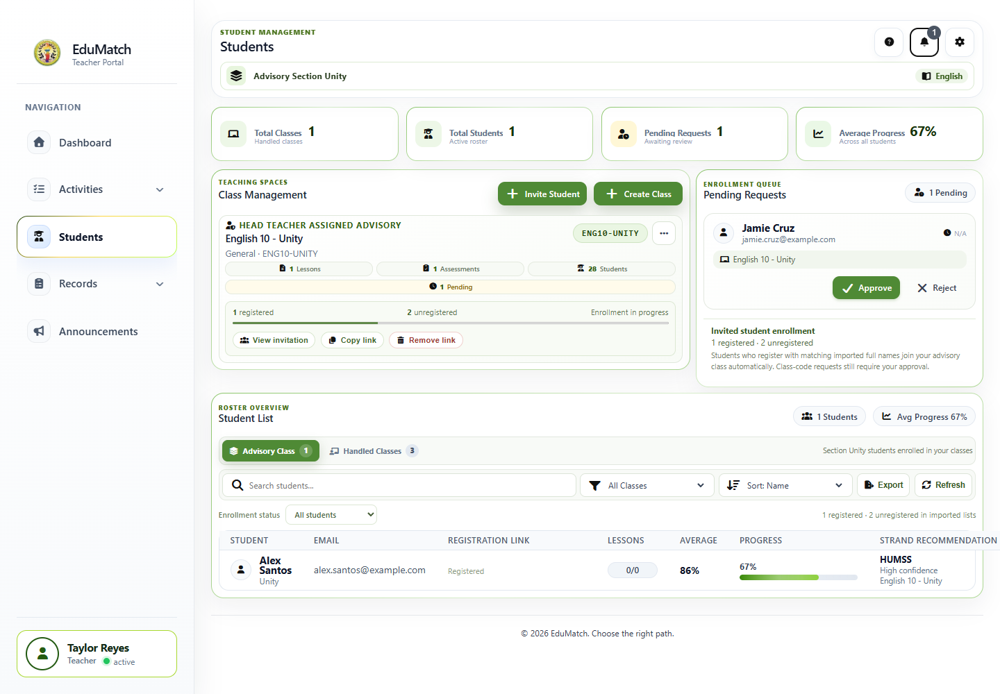
1234Create a class
- Open Students and select Create Class.
- Enter the class name. The teacher’s assigned subject is read-only where enforced.
- Choose an available section. A section already assigned to an incompatible class may not be selectable.
- Add a short description and save.
- Copy the generated class registration code/link for intended students.
Handle enrollment
- Open Enrollment Requests.
- Review the student, requested class, and section/advisory context.
- Accept a valid request or reject an invalid request.
- Confirm the approved student appears in the correct roster.
Registration links and roster maintenance
- Create private or reusable student registration links, copy them, and revoke/delete unused links.
- Search advisory students separately from students enrolled through handled-class codes.
- Open a class roster to view members and remove a student only from that subject enrollment when the action is permitted.
- Edit a class name or delete a class only after checking content, assessments, enrollments, and historical records.
- Post an announcement to a selected class from the class management workflow.
8.3 Upload Lessons and Learning Materials
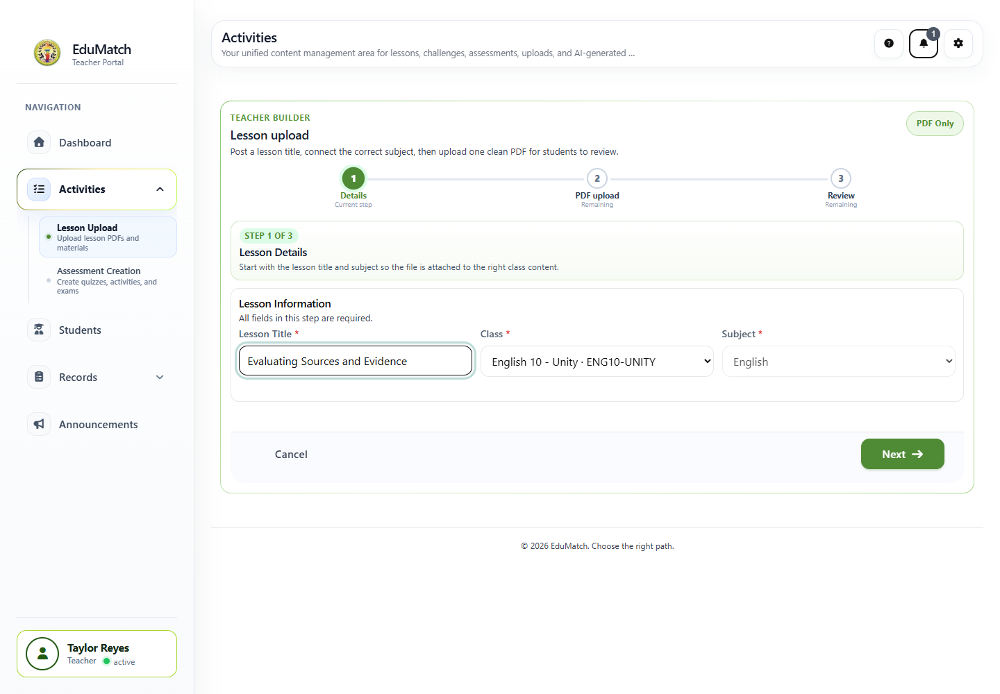
1234Upload a lesson
- Open Activities and choose Lesson Upload.
- Enter the lesson title.
- Select the class and subject. Create the class first if none is available.
- Select Next and upload one clean PDF lesson plan through the implemented PDF workflow.
- Review filename, title, class, subject, and publication details.
- Submit and verify the lesson in Records > Lessons.
Manage an existing lesson
From Records, teachers can list lessons, update supported lesson details, download their own lesson PDF/attachments, and copy a lesson to other compatible classes. Students receive view access; student download endpoints deliberately deny direct lesson downloads.
PDF quality. Open the PDF before upload. Ensure text is readable, pages are correctly oriented, and the file contains no answer keys or personal information that students should not receive.
8.4 Create Assessments Manually or with AI
Open Assessment Creation
In Activities, expand the Activities menu and choose Assessment Creation. The same protected teacher module supports activities/challenges and exam-style assessments, including attachments, class assignment, lesson linking, question editing, and copying to other classes.
Manual question workflow
- Enter the assessment title, type, class/subject, instructions, availability, duration or due date, points, and any permitted attachments.
- Link one or more relevant lessons when the form provides lesson selection.
- Choose manual creation.
- Add each question and select the supported question type.
- Enter options where required, identify the correct answer, and assign points.
- Review totals, wording, accessibility, and answer correctness.
- Save or publish according to the displayed status controls.
AI generation workflow
- Confirm the AI status is available.
- Enter the topic, learning objective, difficulty, question count/type, or source context requested by the form.
- Request generation once; wait for the result.
- Review every question and remove duplicated, incorrect, biased, ambiguous, or out-of-scope items.
- Verify choices, correct answers, explanations, and point values.
- Save only the reviewed version.
Important. Do not send student personal data, confidential records, or unpublished answer keys as AI prompts. AI availability depends on server configuration and rate limits.
8.5 Assessment Management Results and Grading
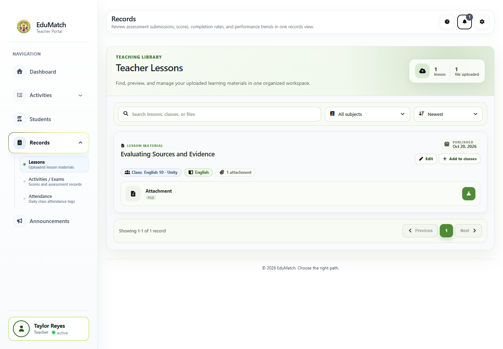
1234Manage assessments
- Open Records and choose Assessments.
- Search/filter by class, subject, type, status, or grading period.
- Open an assessment to edit details or questions while the system permits changes.
- Use Copy to Classes only for compatible classes and re-check dates/instructions afterward.
- Open Results to review submission counts, scores, question performance, and student details returned by the system.
Review activity submissions
- Open the relevant activity/assessment result.
- Read the student’s typed response, links, and attached files.
- Check submission state and timestamps.
- Enter the score and feedback allowed by the review form.
- Save the review and verify the published result.
Assessment weights and grades
Teacher routes provide per-subject assessment-weight retrieval and update. When the Records interface exposes weight controls, set category weights carefully and confirm the total required by the form. Student grade history separates official grades from progress/completion indicators.
8.6 Attendance and Announcements
Record attendance
- Open Records and choose Attendance.
- Select the date, class/section, and roster view. Advisory attendance uses the assigned advisory section; handled-class attendance follows subject enrollment.
- Mark each student using the supported attendance status.
- Review missing marks and save the record.
- Lock the attendance record only when it is final. A locked record may not accept ordinary edits.
Review attendance history
Use date, class, section, or status filters to locate a saved record. Confirm whether the view is advisory or handled-class before interpreting absent or missing students.
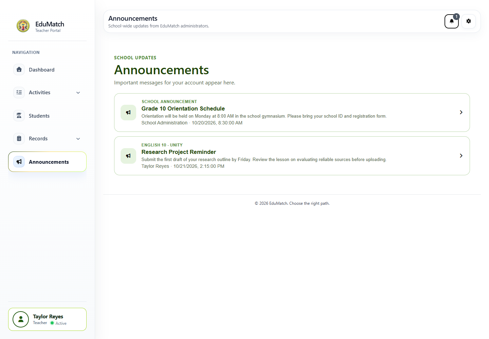
1234Announcements
The standalone page displays announcements addressed to teachers. Teachers also publish class announcements from the Students/class workflow through the protected subject-announcement endpoint. Select the correct class, write a concise message, post, and confirm its audience.
8.7 Teacher Profile Settings Notifications and Sessions
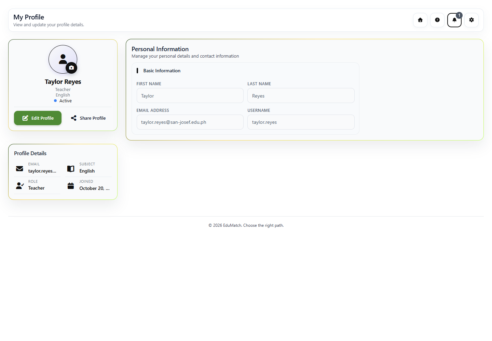
1234Profile
- Open Profile from the gear menu.
- Select Edit Profile.
- Upload only JPG, JPEG, PNG, or WebP up to 5 MB.
- Edit the allowed first name, last name, email, and username fields. School-controlled subject, department, and advisory assignment may remain read-only.
- Save or cancel, then verify the header identity.
- Use Share Profile only when the destination and shared fields are appropriate.
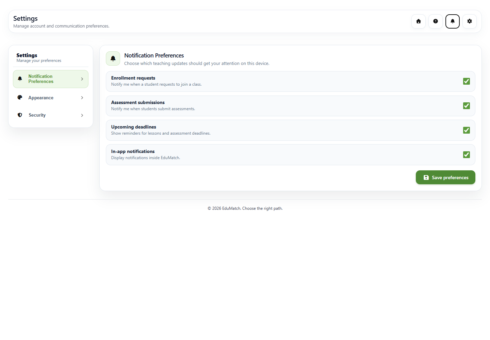
1234Notification preferences
Toggle the displayed categories, such as class, assessment, enrollment, or school updates, then select Save. These preferences affect notification delivery/display, not the underlying records.
Active sessions
- Refresh the session list.
- Identify the current device and review other device/IP/activity entries.
- Revoke an unfamiliar non-current session, or use Logout All Devices only after saving work.
- Sign in again on devices that were intentionally revoked.
Account security and appearance
Change the password only when all rule indicators pass and the confirmation matches. Theme selection applies immediately or after Save according to the page. The guided tour is available on Profile and Settings and can be skipped or completed.
9 Student
Students use EduMatch to join approved classes, read lessons, complete activities and exams, review results and attendance, follow learning progress, and view evidence-based strand recommendations.
Student navigation
| Menu | Purpose |
|---|---|
| Dashboard | Academic overview, upcoming work, focus, classes, Grade Results, and Recommendation Progress. |
| Lessons | Join a class and read assigned lesson PDFs/attachments. |
| Activities | Complete activity submissions or launch assessments/exams. |
| Announcements | Read school and class messages addressed to students. |
| Profile | Review and edit allowed personal details and profile image. |
| Settings | Notifications, appearance, sessions, password, privacy snapshot, and account request. |
9.1 Student Dashboard Grades and Recommendations
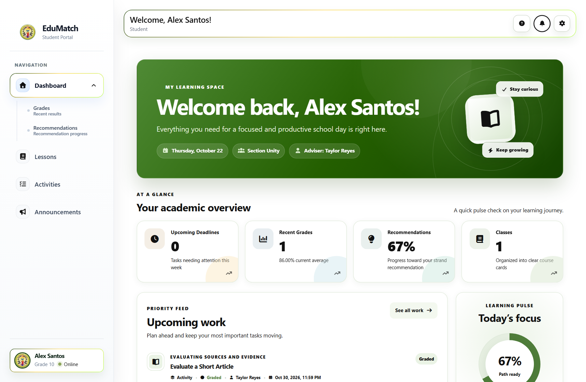
1234Use the dashboard
- Open Dashboard.
- Review the academic overview, upcoming work, today’s focus, and approved classes.
- Select a class shortcut to open Lessons or Activities.
- Expand the Dashboard navigation and choose Grade Results for published scores and complete grading history.
- Choose Recommendation Progress for learning completion, subject performance, evidence strength, and strand-fit ranking.
Understand recommendation progress
The recommendation view separates completion from performance, excludes empty categories when weights are normalized, and presents AI-supported strand fit only when sufficient evidence is ready. It is guidance based on recorded academic evidence, not an automatic enrollment decision.
If no recommendation appears. Complete available lessons and assessments, wait for teachers to publish/review results, and confirm that your account has the correct Grade 10 class and section assignments.
9.2 Join Classes and Read Lessons
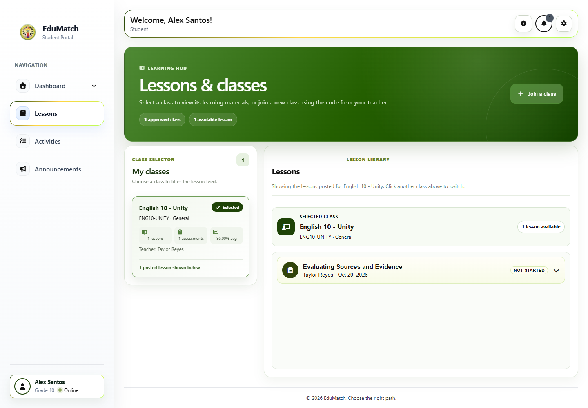
1234Join a class
- Open Lessons and select Join a class.
- Enter the class code exactly as provided by the teacher.
- Submit the request.
- If approval is required, wait for the teacher to accept it.
- Refresh and confirm the class appears under My classes.
Read a lesson
- Select the approved class.
- Choose a lesson from the lesson library.
- Open the PDF or attachment in the built-in lesson reader.
- Use the reader’s page controls and remain in the reader until the required review is complete.
- Close the reader when permitted. EduMatch records lesson progress through the protected progress endpoint.
Download restriction. Student lesson download routes are intentionally denied. Use the in-app viewer; do not attempt to bypass school content controls.
9.3 Complete Activities and Submit Work
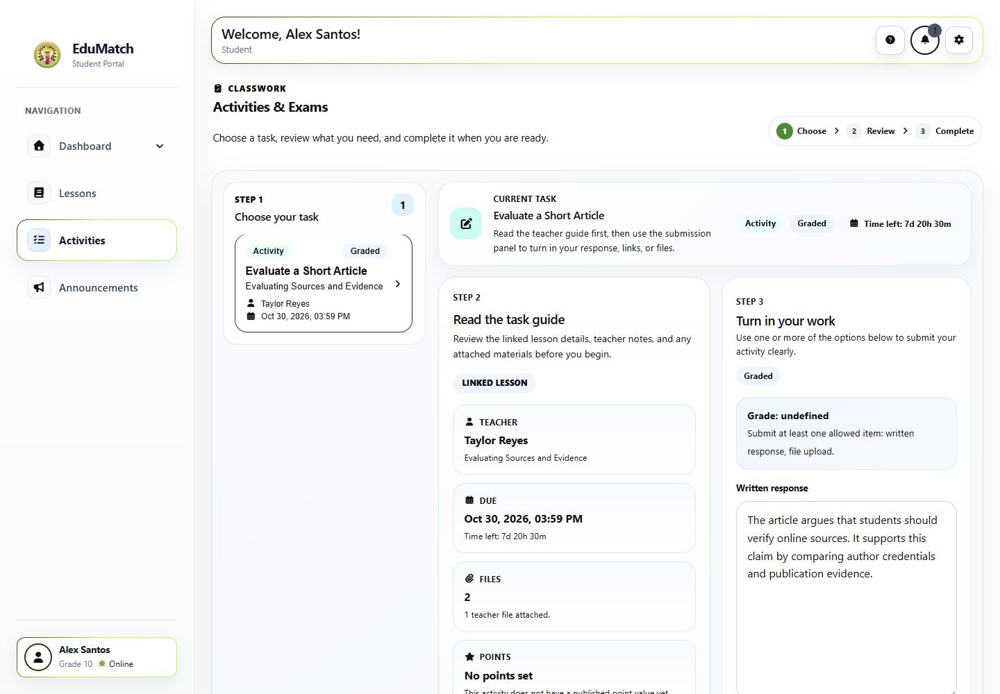
1234Complete an activity
- Open Activities and choose the assigned task.
- Read the task guide, dates, points, linked lesson, and materials.
- Enter the required typed response.
- Add allowed links and upload up to the supported attachment limit shown by the form.
- Select Save Draft to keep work without turning it in.
- Review the complete response and select the turn-in action.
- Confirm the status and timestamp. If the task remains editable and the system allows it, use Unsubmit, revise, and submit again before the deadline.
Practical example
For a reflection activity, read the linked PDF first, write the reflection in the text field, attach the requested file, save a draft, reopen it to check formatting, then turn it in. A saved draft is not a final submission.
9.4 Take an Assessment or Exam
Before starting
- Use a stable connection and a charged device.
- Close unrelated applications and browser tabs.
- Read the allowed time, attempt rules, and linked lessons.
- Start only when you can finish within the available window.
- Open Activities and select the assessment.
- Review the preparation panel and select the start action.
- Enter full screen when the exam interface requests it.
- Answer each question. Use numbered navigation, Previous, and Next question to review.
- For written questions, enter a clear response in the text area.
- Use Review and submit on the final question.
- Check unanswered items, then select Submit assessment once.
- Wait for the confirmation; do not close or refresh during submission.
Exam safeguards
The implementation starts a server-side assessment session, saves progress, logs assessment activity, and can pause or protect exam content when integrity conditions are triggered. Do not switch windows, copy protected content, use unauthorized assistance, or attempt to manipulate the timer.
Connection loss. If the page remains open, wait briefly for synchronization. Do not start a second attempt. If the session cannot resume, record the time and contact the teacher.
9.5 Announcements Profile Settings and Account Requests
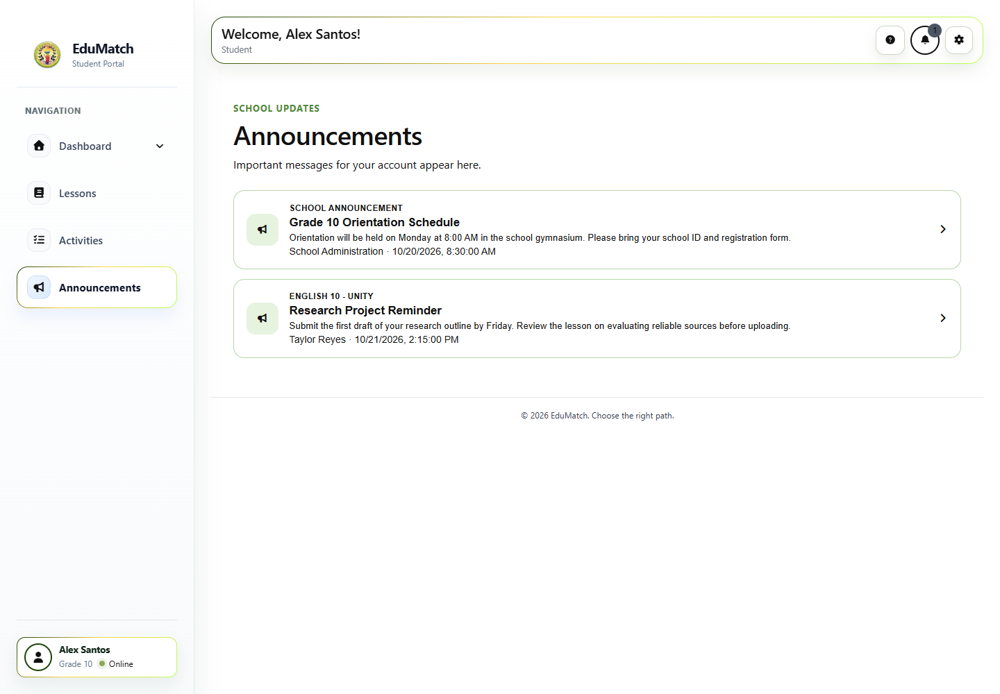
1234Read announcements
- Open Announcements.
- Choose a message from the list.
- Read the title, sender/audience context, date, and full content.
- Use Back to announcements to return to the list.
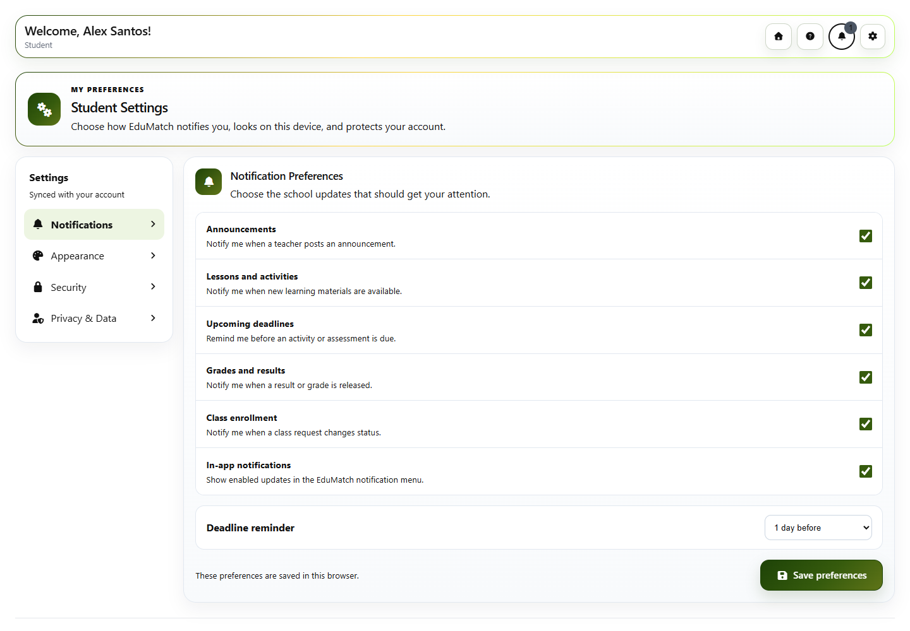
1234Maintain settings and account security
- Save notification preferences after changing them.
- Select an appearance theme and save it to the account.
- Review active sessions and log out unfamiliar non-current devices.
- Change the password by entering the current password, new password, and confirmation. The user must complete the final password-change submission.
- Download the visible settings/profile snapshot as JSON when needed.
- Submit a deactivation or deletion request with a reason of at least the required length; an administrator reviews the request.
Profile
Open Profile from the gear menu to review or edit allowed personal information and upload a profile image. Save only accurate information; school-controlled academic assignments may be read-only or managed by personnel.
9.6 Student Profile Attendance Notifications and Privacy
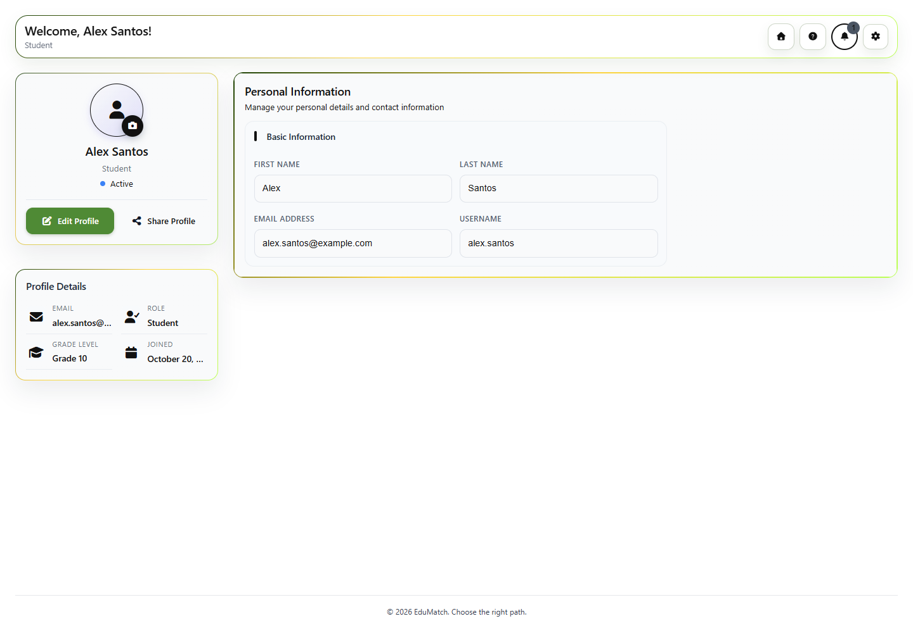
1234Profile
- Open Profile from the gear menu.
- Review the stored identity, role, grade level, section, strand, and school details.
- Select Edit for fields the form permits.
- Upload only JPG, JPEG, PNG, or WebP up to 5 MB.
- Save accurate changes or cancel. Academic assignment changes may require school personnel.
Attendance
The student attendance endpoint supplies the authenticated student’s own history. Attendance may appear in Dashboard or related academic views rather than a separate router page. Review date, class/section, and status; report a suspected error to the recording teacher.
Notifications
The student header polls for notifications and keeps unread state. Open the bell, read an item, use Mark All as Read when appropriate, and close the panel. Notifications can reference classes, lessons, assessments, announcements, and account activity.
Privacy and account request
- Open Settings and review Privacy and Account Data.
- Download the JSON settings snapshot only to a secure location.
- For deactivation or deletion, select the action and enter a reason of at least 10 characters.
- Submit for administrator review.
- Return later to read the latest status and any administrator note.
Deletion request. Submitting a request does not immediately delete the account. The administrator reviews it under school policy and record-retention obligations.
10 Security and Logout
Security best practices
- Use a unique password and never share it with classmates or colleagues.
- Keep invitation, registration, class, and password-reset links private.
- Do not select Keep me signed in on shared or public computers.
- Verify the EduMatch address before entering credentials.
- Lock the device when stepping away.
- Review active sessions and revoke unfamiliar devices.
- Export only the minimum necessary records; store and transmit them through approved school channels.
- Do not include student personal data in AI prompts.
- Report unexpected role access, missing records, or suspicious messages promptly.
Log out
- Finish or save current work.
- Select the gear/account menu in the header.
- Choose Logout.
- Confirm that the sign-in page appears.
- On a shared device, close all browser windows and remove downloaded files according to school policy.
Sessions and forced password changes
EduMatch maintains authenticated sessions and can revoke them. When a new or reset account requires a password change, protected navigation redirects to the Change Password page until the requirement is completed.
10.1 Complete Input Upload and Validation Reference
| Input | Implemented rule | User action |
|---|---|---|
| Password | Generally 8-16 characters; interfaces require the displayed uppercase, lowercase, number, and special-character checks. Some legacy staff settings fields display a 17-character HTML maximum, but the backend policy maximum is 16. | Follow the stricter 8-16 policy. |
| Username | 3-30 characters; begins with a letter or number; letters, numbers, period, underscore, and hyphen. | Use Check Again or a suggested username when unavailable. |
| Names | Teacher validation accepts letters, spaces, hyphens, and apostrophes; numbers are rejected. | Enter the official school name. |
| Profile image | JPG/JPEG, PNG, or WebP. Teacher, student, and secretary interfaces enforce 5 MB; administrator interface enforces 2 MB. | Crop/compress before upload. |
| Lesson plan | PDF only, maximum 10 MB in the teacher workflow. | Open and verify the PDF first. |
| Assessment/activity attachments | Up to 10 attachments, 10 MB each; common PDF, Word, PowerPoint, Excel, JPG/JPEG, PNG, text, WebP, and ZIP formats are accepted by the activity workflow. | Remove duplicates and unsupported files. |
| Student activity files | Up to 5 files through the protected submission endpoint; common document, image, and ZIP types. | Use only the submission methods allowed by the teacher. |
| Announcement | Administrator title maximum 200 characters; message maximum 5,000 characters; at least one audience required. | State dates and required action clearly. |
| Section | Name required; school year formatted YYYY-YYYY; capacity 1-200; current implementation standardizes grade to Grade 10. | Check year and capacity before saving. |
| Account request reason | Student deactivation/deletion reason requires at least 10 characters and supports up to 1,000. | Give a specific, non-sensitive reason. |
Validation behavior
- Disabled buttons indicate that required data, verification, or permission is still missing.
- Client validation improves feedback; the server remains authoritative and can reject stale, duplicate, unauthorized, unsafe, or conflicting data.
- A successful upload is not proof that a record was published; verify the resulting lesson, assessment, submission, or profile state.
- Rate-limited actions include invitations, uploads, AI requests, and authentication. Wait before retrying repeatedly.
11 Troubleshooting
| Problem | Check | Action |
|---|---|---|
| Security question unavailable | Connection and backend service | Select Refresh. If it remains unavailable, wait and contact support; sign-in cannot safely proceed without verification. |
| Invalid credentials or locked account | Username, Caps Lock, failed-attempt count | Retry carefully once, use Forgot password, or contact an administrator. Do not repeatedly guess. |
| Wrong dashboard | Assigned role | Log out and report the account/role mismatch. Role access is controlled by the server. |
| Page shows no records | Filters, school year, status, class, section | Clear filters, refresh, verify assignments and permissions. |
| Student cannot see class | Code and approval status | Confirm the request was submitted and accepted by the correct teacher. |
| Lesson will not open | Approved enrollment and PDF availability | Refresh, reselect the class, and ask the teacher to verify publication/storage. |
| Upload rejected | File type, count, size, connection | Use the required PDF or supported attachment type; reduce files and retry once. |
| AI generation unavailable | AI status and rate limit | Create questions manually and notify the administrator if the outage persists. |
| Submission status unclear | Timestamp and status badge | Do not resubmit repeatedly. Refresh once and contact the teacher with the task and time. |
| Attendance roster is wrong | Advisory vs handled-class view | Select the correct roster and verify subject enrollments/section assignment. |
| PDF export blocked | Approval status and current filters | Refresh status; request new approval if scope changed or approval expired/was consumed. |
| Section cannot be deleted | Referenced student/class/history records | Archive it instead. Resolve dependencies only under approved data policy. |
Information to provide when reporting a problem
State your role, page name, action attempted, approximate time, visible error message, affected class/section (without unnecessary personal data), browser, and whether refresh/re-login changed the result.
12 Frequently Asked Questions
Can an administrator directly manage every academic workflow?
No. Administrators govern accounts, sections, settings, approvals, announcements, analytics, and audits. Teacher and head-teacher routes own classroom content, assessment, roster, and attendance workflows.
Where is school year managed?
On section records and through the secretary’s year-end archive workflow. There is no separate school-year page.
Where are department and strand managed?
They are assignment fields in account, teacher, registry, section, and recommendation workflows, not standalone pages.
Why can a student view but not download a lesson?
The student download endpoints intentionally deny downloads. The built-in reader provides controlled access and progress tracking.
Is AI assessment output automatically correct?
No. A teacher or head teacher must review and edit every generated question before use.
Why is an enrollment request pending?
The teacher has not yet accepted or rejected the class-code request.
Can a teacher see students from another section?
Yes, when those students are approved in a handled subject class. Advisory attendance remains tied to the assigned advisory section.
Can archived records be exported to PDF immediately?
No. The secretary requests approval; the administrator reviews; the secretary then consumes the approved authorization for the matching scope.
What happens to a saved activity draft?
It remains editable and is not a final turn-in until the student submits it.
Who decides a student’s strand?
EduMatch presents evidence-based recommendation information. School policy and authorized personnel make the final decision.
12.1 Complete Screen and Route Reference
This index records every active user-facing route in the current router, including redirects that intentionally consolidate older pages.
| Audience | Route | Screen or behavior |
|---|---|---|
| Public | /auth/login /auth/private-login | Sign In; private-login uses the same component. |
| Public | /auth/forgot-password /auth/reset-password/:token | Password recovery and token reset. |
| Authenticated | /auth/change-password | Required temporary-password replacement. |
| Public link | /auth/class-register/:token | Named class student registration. |
| Public link | /auth/teacher-register/:token | Teacher invitation activation through LoginView. |
| Public link | /auth/student-register/:token | Student registry activation and email verification. |
| Student | /student/dashboard | Overview, grades, and recommendation query sections. |
| Student | /student/lessons | Classes, join code, lesson reader, and progress. |
| Student | /student/activities | Activities, submissions, and assessment launch. |
| Student | /student/exam/:assessmentId | Protected exam mode. |
| Student | /student/announcements /student/profile /student/settings | Messages, profile, preferences, sessions, security, privacy, and account requests. |
| Teacher | /teacher/dashboard /teacher/activities | Overview/tour and lesson/assessment builders. |
| Teacher | /teacher/students /teacher/records | Classes/rosters/enrollment and lessons/assessments/attendance. |
| Teacher | /teacher/announcements /teacher/profile /teacher/settings | Messages, profile, preferences, sessions, and security. |
| Secretary | /secretary/dashboard /secretary/teachers /secretary/users | Operations overview, monitoring, and account management. |
| Secretary | /secretary/students /secretary/sections /secretary/archived | Student records, sections, year end, history, and exports. |
| Secretary | /secretary/profile /secretary/settings | Profile, password, and appearance. |
| Head Teacher | /headteacher/dashboard /headteacher/management | Department overview and managed teacher supervision. |
| Head Teacher | /headteacher/students /headteacher/lessons | Registry and managed content. |
| Head Teacher | /headteacher/announcements /headteacher/profile /headteacher/settings | Messages, leadership profile, password, and appearance. |
| Administrator | /admin/dashboard /admin/users /admin/sections | Analytics, accounts/reports, and sections. |
| Administrator | /admin/requests /admin/announcements /admin/audit-logs | Export approvals, school communications, and audit/security activity. |
| Administrator | /admin/profile /admin/settings | Identity, security, sessions, maintenance, and appearance. |
| Redirects | /admin/login-attempts /admin/logs | Redirect to /admin/audit-logs. |
| Redirects | /student/courses /student/challenges | Redirect to Lessons and Activities respectively. |
| Redirects | /teacher/challenges | Redirect to Teacher Activities. |
Developer utility. /storage-demo exists in the router but is a storage-development screen, not a normal role workflow. It is intentionally excluded from end-user operating instructions.
13 Glossary
| Term | Meaning in EduMatch |
|---|---|
| Activity | A non-exam assessment that can accept text, links, attachments, drafts, turn-in, unsubmit, review, and scoring. |
| Advisory section | The section assigned to a teacher for advisory responsibilities and advisory attendance. |
| Archive | A preserved inactive record used for historical tracking rather than ordinary active operations. |
| Assessment | A configured learning task such as an activity, challenge, quiz, or exam. |
| Class | A teacher-managed subject offering connected to a section and class code. |
| Class code | A teacher-provided code used by a student to request enrollment. |
| Department | Academic organizational assignment used for head-teacher and teacher management. |
| Enrollment request | A pending request created when a student joins a class and awaits teacher review. |
| Export approval | Administrator authorization required before a secretary can generate a protected archived-record PDF. |
| Grading period | One of the limited academic periods used to organize official subject grade records. |
| Head Teacher | A supervisory role responsible for managed teachers and academic oversight in an assigned department. |
| Lesson | Teacher-published PDF learning content and permitted attachments. |
| Recommendation | An evidence-based strand-fit result derived from available learning and academic records. |
| Registry | The controlled student onboarding and assignment workflow. |
| Section | A capacity-aware Grade 10 student grouping with school year and active/archive state. |
| Session | A signed-in device/browser authorization that can be reviewed or revoked. |
| Strand | An academic pathway label used in student assignment and recommendation results. |
| Submission | A student response or finalized assessment attempt. |
| Subject enrollment | The relationship that allows a student to participate in a teacher’s handled class. |
14 Screenshot Capture Register
The manual uses genuine EduMatch interface captures with documentation-only sample accounts and records. This prevents disclosure of real student or personnel data while preserving the implemented layout, labels, navigation, controls, and representative populated states.
Additional populated-state captures recommended for final institutional publication
Capture these only in an approved training environment with synthetic or consented records. Do not use production student data merely to improve the manual.
- User action menu and edit form
- Registration-link result and link list
- Populated analytics charts
- Section create/edit dialog
- Pending export request review dialog
- System Settings security, maintenance, and active sessions sections
- Student registration/import preview
- Student assignment record detail
- End School Year confirmation
- Approved archived-PDF export state
- Populated attendance overview
- Teacher invitation dialog and invitation list
- Managed teacher detail with students, lessons, and assessments
- Registry row validation/import result
- Manual and AI assessment generation forms
- Create Class dialog and class code
- Enrollment request decision
- Lesson PDF upload/review steps
- Manual question editor and AI result review
- Submission review, assessment result, grading weights, and attendance entry/lock states
- Join Class dialog and pending/approved states
- Lesson reader with genuine training PDF
- Activity draft and submitted states
- Exam question navigation and submit review
- Populated Grade Results and Recommendation Progress